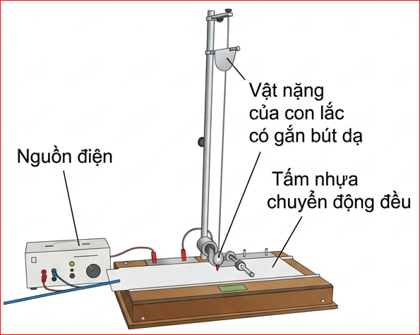
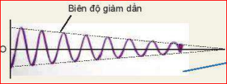
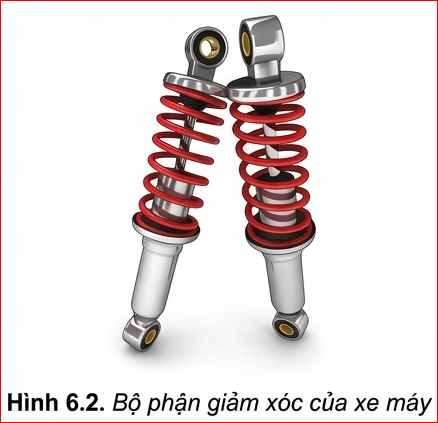
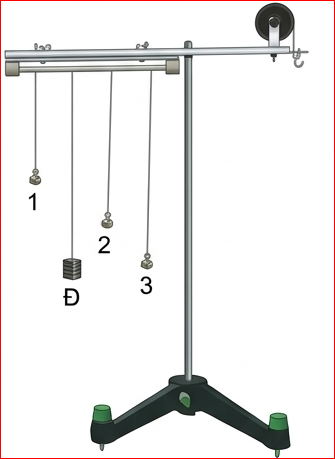
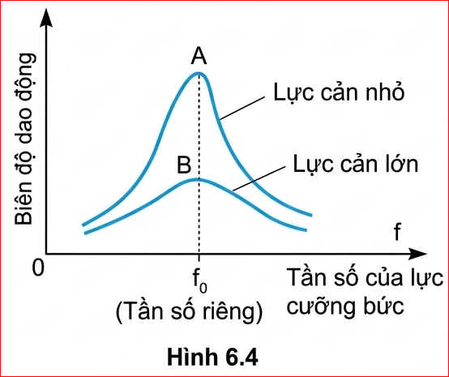

Trong các bài trước, ta đã giả thiết không có ma sát tác dụng vào con lắc. Con lắc dao động với biên độ và tần số riêng (kí hiệu là \(f_{0}\)) không đổi.
Trong thực tế, khi kéo con lắc ra khỏi vị trí cân bằng rồi thả cho nó dao động thì biên độ của nó giảm dần (Hình 6.1). Dao động như vậy gọi là dao động tắt dần.
❓Câu hỏi:
Hãy giải thích tại sao dao động của em bé chơi xích đu trong ví dụ ở đầu bài lại tắt dần nếu không có người mẹ thỉnh thoảng đẩy nhẹ vào em bé.
💡 Lời giải:
Do trong quá trình xích đu dao động, luôn có lực cản của không khí và lực ma sát tại trục quay của xích đu. Các lực này sinh công âm làm tiêu hao cơ năng của hệ (chuyển hoá dần cơ năng thành nhiệt năng), khiến biên độ dao động giảm dần theo thời gian, cuối cùng xích đu dừng lại.
Chuẩn bị: Con lắc có quả nặng gắn bút dạ; tấm nhựa để ghi đồ thị của dao động; bộ phận tạo chuyển động đều cho tấm nhựa.
Tiến hành:

✋Hoạt động:
Hãy nhận xét về biên độ và chu kì (hay tần số) dao động của con lắc trong thí nghiệm.
💡 Hướng giải quyết:
- Biên độ: Giảm dần theo thời gian (thể hiện qua đường cong bao ngoài đồ thị nhỏ dần lại).
- Chu kì/Tần số: Không thay đổi theo thời gian. Ma sát nhỏ không làm thay đổi đáng kể chu kì dao động riêng của hệ.

Kết quả thí nghiệm:
Trong phần 1, khi con lắc dao động, nó chịu lực ma sát ở chỗ treo và ở chỗ tiếp xúc giữa bút dạ với tấm nhựa. Ngoài ra, nó còn chịu lực cản của không khí. Lực ma sát và lực cản của không khí đều làm tiêu hao cơ năng của con lắc, chuyển hoá dần cơ năng thành nhiệt năng. Vì thế, biên độ dao động của con lắc giảm dần và cuối cùng con lắc dừng lại. Nguyên nhân làm dao động của vật tắt dần là do lực ma sát và lực cản của môi trường.
Bộ phận giảm xóc của xe máy Hình 6.2 là ứng dụng của dao động tắt dần.

Khi xe máy đi qua chỗ mấp mô, xe bị nảy lên và dao động. Nếu dao động kéo dài làm người ngồi trên xe khó chịu. Vì thế, người ta lắp thêm một bộ phận giảm xóc để làm tắt dao động của khung xe.
❓Câu hỏi:
Hãy tìm trong thực tế ví dụ về dao động tắt dần và cho biết trong mỗi trường hợp thì dao động tắt dần là có lợi hay có hại.
💡 Lời giải:
Dao động cưỡng bức là dao động xảy ra dưới tác dụng của ngoại lực tuần hoàn có tần số \(f\) bất kì. Khi dao động ổn định tần số dao động cưỡng bức bằng tần số của ngoại lực.
Ví dụ: Khi đến bến xe buýt, xe chỉ tạm dừng nên không tắt máy, thân xe vẫn dao động. Dao động đó là dao động cưỡng bức dưới tác dụng của lực cưỡng bức tuần hoàn gây ra bởi chuyển động của pít-tông trong xi lanh của máy nổ.
Dao động cưỡng bức khi ổn định có những đặc điểm sau đây:
❓Câu hỏi:
Tìm thêm ví dụ về dao động cưỡng bức.
💡 Lời giải:
- Dao động của mặt trống khi người nhạc công gõ liên tục thành nhịp.
- Căn nhà rung lên bần bật (dao động cưỡng bức) mỗi khi có xe tải siêu trọng chạy qua (ngoại lực cưỡng bức).
- Dao động của khung xe ô tô khi xe chạy trên đường lát gạch nhấp nhô đều.
Chuẩn bị: Một thanh cứng hình trụ hai đầu thanh được gắn vào hai ổ trục để thanh có thể xoay dễ dàng quanh trục của nó. Một con lắc điều khiển Đ, ba con lắc thử 1, 2 và 3 được treo vào thanh cứng hình trụ.

Tiến hành: Bố trí thí nghiệm như Hình 6.3.
✋Hoạt động:
Hãy dự đoán xem, trong thí nghiệm Hình 6.3, nếu con lắc điều khiển Đ được kéo sang một bên theo phương vuông góc với thanh rồi thả ra cho dao động thì các con lắc khác có dao động không? Con lắc nào dao động mạnh nhất? Tại sao? Làm thí nghiệm để kiểm tra. So sánh kết quả quan sát được với dự đoán.
💡 Hướng giải quyết:
- Dự đoán: Các con lắc 1, 2, 3 đều sẽ dao động vì dao động của con lắc Đ truyền qua thanh ngang tạo thành lực cưỡng bức tác dụng lên 1, 2, 3.
- Con lắc dao động mạnh nhất: Con lắc nào có chiều dài gần bằng chiều dài của con lắc Đ nhất sẽ dao động với biên độ mạnh nhất (vì chu kì \(T \approx T_Đ\), dẫn đến cộng hưởng).
- Kết quả quan sát: Trùng khớp với dự đoán. Con lắc có cùng chiều dài với Đ dao động biên độ cực đại.
Từ kết quả thí nghiệm trên, ta có thể rút ra điều kiện để xảy ra hiện tượng cộng hưởng.
Hiện tượng biên độ dao động cưỡng bức tăng đến giá trị cực đại khi tần số \(f\) của lực cưỡng bức tiến đến bằng tần số riêng \(f_0\) của hệ dao động gọi là hiện tượng cộng hưởng.

Đường cong trên đồ thị Hình 6.4 gọi là đồ thị cộng hưởng. Đồ thị càng nhọn khi lực cản của môi trường càng nhỏ (điểm A).
Điều kiện \(f = f_0\) gọi là điều kiện cộng hưởng.
Khi tần số của lực cưỡng bức bằng tần số riêng của hệ dao động thì hệ được cung cấp năng lượng một cách nhịp nhàng, đúng lúc, do đó biên độ dao động của hệ tăng dần lên. Biên độ dao động đạt tới giá trị cực đại khi tốc độ tiêu hao năng lượng do ma sát bằng tốc độ cung cấp năng lượng cho hệ.
Trong trò chơi đu, người đu phải tác dụng lực vào đu bằng cách nhún người khi đu bắt đầu đổi chiều ở vị trí cao nhất. Trong trò chơi này, người chơi và đu đóng vai trò là một con lắc, lực nhún của người chơi đóng vai trò là ngoại lực. Vì ngoại lực luôn tác dụng vào con lắc tại những thời điểm nhất định (có cùng tần số với tần số dao động của đu) nên mặc dù người chơi chỉ cần nhún nhẹ nhàng cũng có thể đưa được đu lên rất cao.
Cộng hưởng là một hiện tượng vật lí quan trọng có thể xuất hiện trong nhiều tình huống khác nhau. Trong một số trường hợp, hiện tượng cộng hưởng có lợi; như:
Tuy nhiên, trong một số trường hợp khác hiện tượng cộng hưởng lại có hại.
Nhiều hệ dao động như toà nhà, cầu, bệ máy, khung xe,... đều có một hay nhiều tần số riêng. Do vậy khi thiết kế cần tránh không để cho các hệ ấy chịu tác dụng của những lực cưỡng bức mạnh có tần số bằng tần số riêng ấy. Nếu không chúng sẽ làm cho các hệ dao động mạnh dẫn đến đổ hoặc gãy. Câu chuyện về một cái cầu bắc ngang qua sông Fontanka ở Saint Petersburg ở nước Nga được thiết kế đủ vững chắc cho 300 người đi qua. Nhưng nó đã bị sập khi một trung đội bộ binh gồm 36 người đi đều qua vào năm 1960. Hay câu chuyện về một cây cầu khác được xây dựng năm 1940 qua eo biển Tacoma ở nước Mỹ có thể chịu nhiều ô tô có tải trọng lớn đi qua nhưng cũng đã bị đổ sập dưới tác dụng của gió.
✋Hoạt động (Kết nối tri thức):
Đánh giá được sự có lợi hay có hại của cộng hưởng trong các ví dụ nêu trên.
💡 Hướng giải quyết:
📝Bài 1:
Một con lắc lò xo gồm lò xo nhẹ có độ cứng \(k = 100 \text{ N/m}\) và vật nhỏ khối lượng \(m = 100 \text{ g}\) dao động tắt dần trên mặt phẳng ngang. Hệ số ma sát giữa vật và mặt phẳng ngang là \(\mu = 0,01\). Lấy \(g = 10 \text{ m/s}^2\). Tính độ giảm biên độ của con lắc sau mỗi chu kì dao động.
💡 Lời giải chi tiết:
Lực ma sát tác dụng lên vật: \(F_{ms} = \mu N = \mu mg\)
Độ giảm biên độ sau nửa chu kì là: \(\Delta A_{1/2} = \frac{2F_{ms}}{k} = \frac{2\mu mg}{k}\)
Độ giảm biên độ sau một chu kì là: \(\Delta A = 2 \cdot \Delta A_{1/2} = \frac{4\mu mg}{k}\)
Thay số vào công thức:
\[\Delta A = \frac{4 \cdot 0,01 \cdot 0,1 \cdot 10}{100} = 0,0004 \text{ m} = 0,4 \text{ mm}\]
Đáp án: Biên độ giảm 0,4 mm sau mỗi chu kì.
📝Bài 2:
Một xe lửa chạy trên đường ray thẳng. Khoảng cách giữa hai chỗ nối của các thanh ray là \(L = 12,5 \text{ m}\). Con lắc lò xo treo trong toa tàu có chu kì dao động riêng là \(T_0 = 0,5 \text{ s}\). Hỏi xe lửa chạy với tốc độ bao nhiêu thì con lắc sẽ dao động mạnh nhất?
💡 Lời giải chi tiết:
Mỗi khi bánh xe đi qua chỗ nối giữa hai thanh ray, toa tàu chịu một lực xóc (ngoại lực cưỡng bức). Thời gian giữa hai lần xóc liên tiếp (chu kì của ngoại lực cưỡng bức) là thời gian tàu đi hết chiều dài 1 thanh ray.
Chu kì ngoại lực: \(T = \frac{L}{v}\)
Để con lắc dao động mạnh nhất, hiện tượng cộng hưởng phải xảy ra, tức là chu kì ngoại lực cưỡng bức bằng chu kì dao động riêng của con lắc:
\[T = T_0 \Rightarrow \frac{L}{v} = T_0\]
Suy ra tốc độ của xe lửa: \(v = \frac{L}{T_0} = \frac{12,5}{0,5} = 25 \text{ m/s}\)
Đổi sang km/h: \(v = 25 \cdot 3,6 = 90 \text{ km/h}\).
Đáp án: Tốc độ của tàu là 25 m/s (hoặc 90 km/h).
📝Bài 3:
Một con lắc đơn có chiều dài \(l = 1 \text{ m}\) được treo vào gầm một chiếc xe ô tô. Ô tô đi qua một con đường gồ ghề, các mô đất cách đều nhau một khoảng \(d = 8 \text{ m}\). Lấy \(g = \pi^2 \approx 10 \text{ m/s}^2\). Hỏi vận tốc của ô tô là bao nhiêu thì con lắc dao động với biên độ lớn nhất?
💡 Lời giải chi tiết:
Chu kì dao động riêng của con lắc đơn: \[T_0 = 2\pi\sqrt{\frac{l}{g}} = 2\pi\sqrt{\frac{1}{\pi^2}} = 2 \text{ s}\]
Ngoại lực cưỡng bức tác dụng lên con lắc do xe đi qua các mô đất. Thời gian giữa 2 lần vấp liên tiếp là chu kì ngoại lực: \(T = \frac{d}{v}\).
Để con lắc dao động với biên độ lớn nhất thì phải xảy ra hiện tượng cộng hưởng cơ:
\[T = T_0 \Leftrightarrow \frac{d}{v} = T_0\]
Vận tốc của ô tô là: \[v = \frac{d}{T_0} = \frac{8}{2} = 4 \text{ m/s}\]
Đổi sang km/h: \(v = 4 \cdot 3,6 = 14,4 \text{ km/h}\).
Đáp án: Vận tốc ô tô là 4 m/s (hay 14.4 km/h).